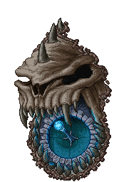
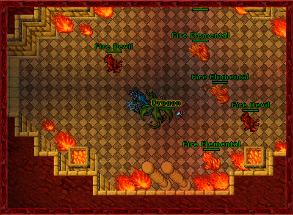
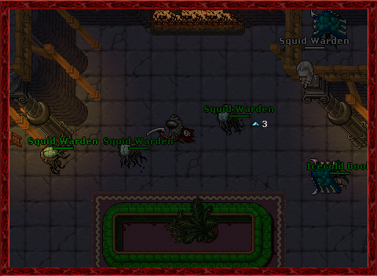

 Exaltation Forge Calculator
Welcome to our Tibian Exaltation Forge, a mystical workshop where the ancient art of equipment upgrade is reborn! Inspired by the legendary forges of Tibia, our system lets you imbue your items with extraordinary power, turning ordinary gear into artifacts of immense strength. Here, the destiny of your equipment is determined not only by gold but by the careful balance of Dust, Slivers, and the coveted Exalted Cores.
How to use
Fusion: With "Fusion" as your method, enter your current and target tiers along with the item classification, and choose whether to apply convergence. Then click Calculate to see the total cost in gold, the dust needed, the required exalted cores, and the number of items to be fused. Use this method if you prefer the standard upgrade path with a chance for bonus effects noting that you can only ensure 65% success rate.
Convergence Fusion: For items of classification 4, select the Fusion method and mark the convergence option. This guarantees a successful upgrade with a higher cost in gold and dust but without bonus effects. Simply enter your tiers and classification, and let the calculator show you the precise cost.
Transfer: Choose "Transfer" if you want to transfer an item's tier to another item of the same classification. Input your current tier and select the corresponding classification. The calculator will display the gold, dust, and exalted cores required to perform the transfer, noting that the source item will be destroyed.
Convergence Transfer: For a tier transfer without the usual tier loss, available only for classification 4. Select "Transfer" and mark the convergence option. Provide the current tier and classification, and the system will calculate the higher cost in gold and dust along with the required exalted cores for a flawless transfer.
In our Forge, you can calculate all you need to elevate your items' tiers. The primary method, Fusion, requires you to combine two identical items of the same tier, investing gold and Dust along the way. The process is fraught with risk—success is not guaranteed, and failed attempts may reduce the item's tier—yet a stroke of luck or the judicious use of an Exalted Core can tip the odds in your favor. Our calculator accurately computes the acumulative cost, including the total number of fusions required, the corresponding Dust consumption, and the necessary Exalted Cores, as well as the number of items needed.
For those who seek certainty, our Convergence methods provide a guaranteed outcome at a steeper price. Convergence Fusion and Convergence Transfer eliminate the risk of tier loss but demand a higher gold investment and increased Dust costs. Whether you choose the traditional path or the assured route, every calculation is meticulously based on Tibia’s intricate upgrade formulas, ensuring that your journey through the tiers remains as challenging and rewarding as the original lore.
Additionally, the Transfer method allows you to shift an item's tier from one piece to another, effectively preserving the hard-earned enhancements, though at the cost of the source item. With a blend of strategy and resource management, our Forge offers a rich, immersive experience that mirrors the complexity and excitement of Tibia’s own equipment upgrade system.
Dust
Dust is a unique resource obtained by defeating fiendish and influenced creatures. These enhanced monsters drop Dust in amounts determined by the number of “stacks” they possess; more stacks mean a higher Dust yield. The lower, 1 Stack: 1-3 Dust, and, the highest, 5 Stacks: 5-15 Dust.
Slivers
Slivers are tradeable items that can be crafted from Dust or dropped by even more formidable fiendish creatures. Typically, three Slivers can be exchanged for 60 Dust.
Exalted Core
Exalted Cores, the most coveted resource, are created by combining 50 Slivers. They are essential in high-level forging processes, as they not only boost success rates but can also prevent tier loss during fusions or transfers.
Influenced and Fiendish Creatures
Influenced creatures are standard monsters that have been empowered, exhibiting increased strength and providing more experience points when defeated. They appear with stack levels ranging from 1 to 5, each level enhancing their attributes:
Fiendish creatures are a more formidable variant, equivalent to a 15-stack influenced creature, boasting:
To locate these fiendish beings, players can use specialized spells like "Find Fiend."
 